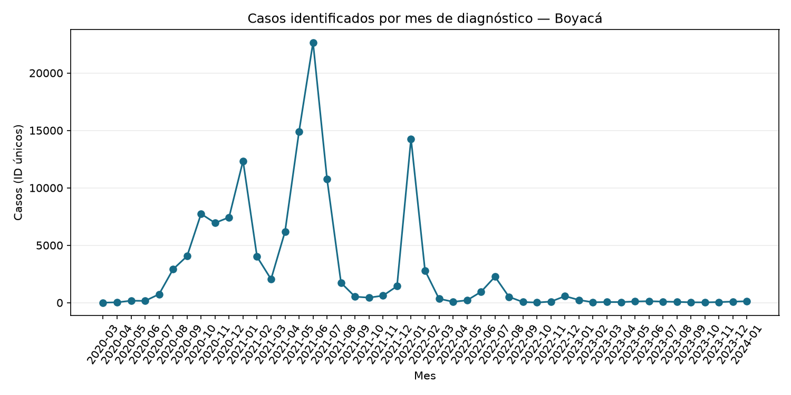
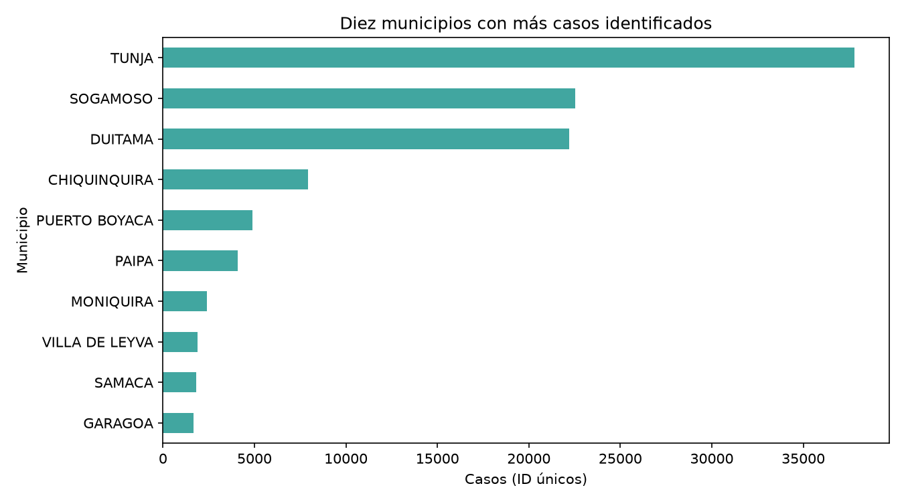

Departamento: Boyacá · Periodo de diagnóstico: 2020-03 a 2024-01
Pregunta: evolución mensual de casos identificados por ID de caso.
Indicador 1
131,128 casos identificados
Indicador 2
Cambio último mes frente al anterior: 29.9%


El máximo del periodo ocurrió en 2021-06: 22,654 casos identificados.
Se excluyeron 5 registros de Boyacá sin fecha de diagnóstico válida. Se cuentan ID de caso únicos; los resultados describen este CSV y no necesariamente todos los contagios. Fecha de diagnóstico no equivale a fecha de notificación o reporte.
Fuente: Portal Nacional de Datos Abiertos — Casos positivos de COVID-19 en Colombia.
Reporte agregado; no se incluyen filas individuales.